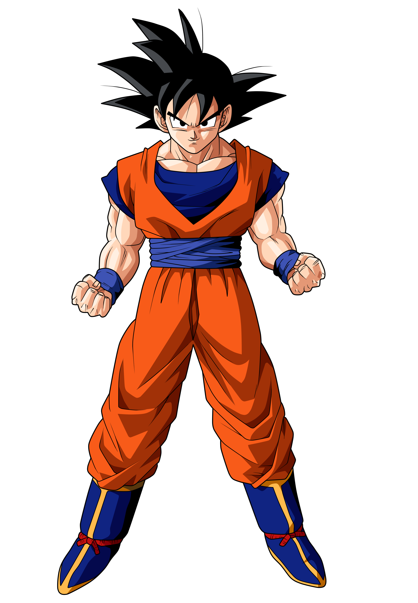
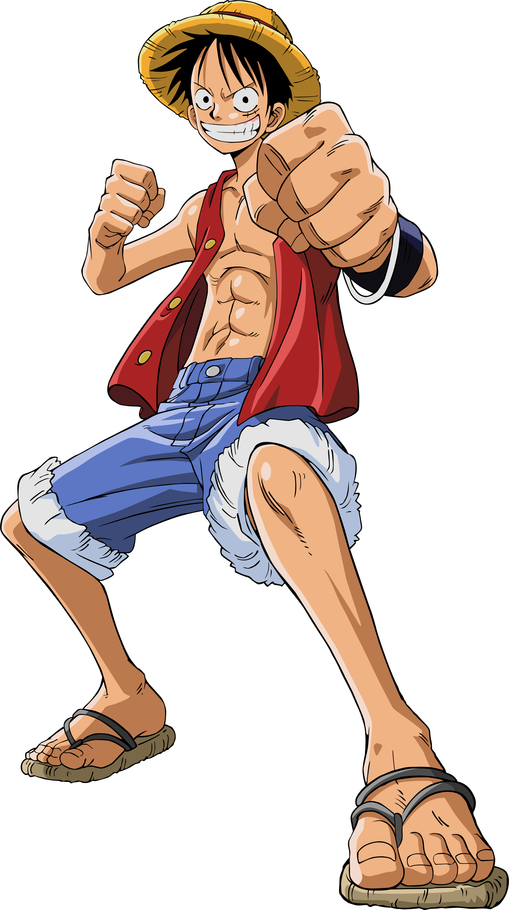
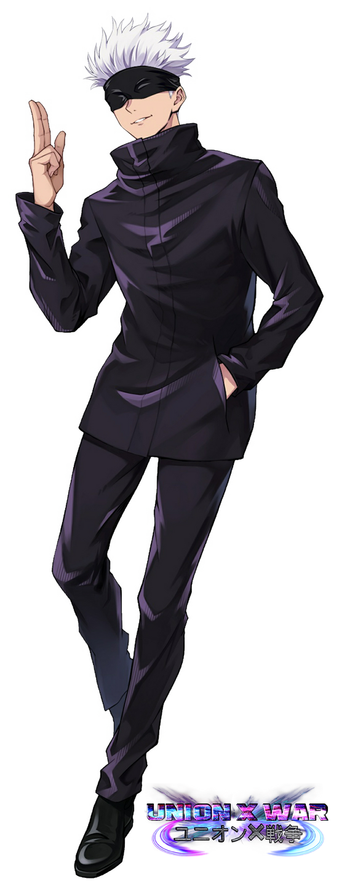
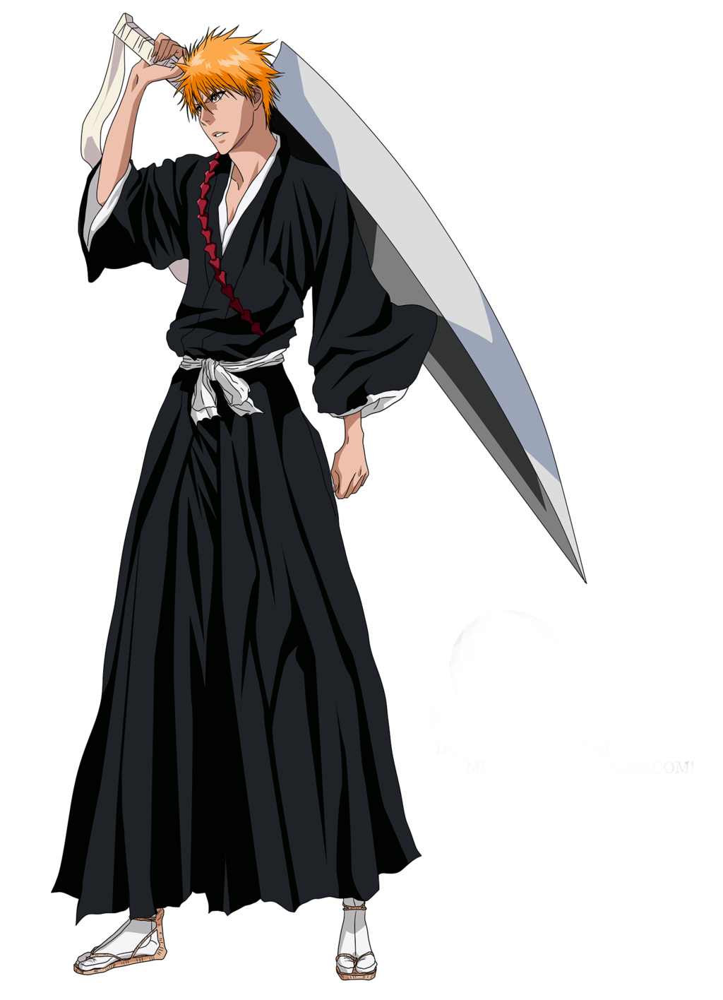

Anime Character Details

Goku
Anime: Dragon Ball
Species: Saiyan
Role: Warrior and Protector
Power Level: Legendary
Goku is a powerful Saiyan warrior who protects Earth and his friends. He loves training and becoming stronger.
Backstory: Goku was sent to Earth as a young Saiyan. He grew up on Earth and became a skilled martial artist and powerful warrior.
Abilities: Super Saiyan transformations, Kamehameha, Instant Transmission, and advanced martial arts.
Personality: Goku is cheerful, energetic, competitive, and always excited to meet strong opponents.
First Appearance: Dragon Ball manga, 1984.

Naruto Uzumaki
Anime: Naruto
Species: Human
Role: Ninja and Leader
Power Level: Legendary
Naruto is a determined ninja from the Hidden Leaf Village. His dream is to become Hokage and protect his friends.
Backstory: Naruto grew up as an orphan in the Hidden Leaf Village. Despite being treated as an outsider, he worked hard to become a respected ninja.
Abilities: Shadow Clone Jutsu, Rasengan, Sage Mode, and powerful chakra techniques.
Personality: Naruto is energetic, determined, friendly, and never gives up on his goals.
First Appearance: Naruto manga, 1999.

Monkey D. Luffy
Anime: One Piece
Species: Human
Role: Pirate Captain
Power Level: Legendary
Luffy is the captain of the Straw Hat Pirates. He dreams of becoming the Pirate King.
Backstory: Luffy grew up inspired by the pirate Shanks. He later formed his own crew and began a journey across the Grand Line.
Abilities: Gear transformations, Haki, rubber-like abilities, and powerful attacks.
Personality: Luffy is adventurous, fearless, loyal, optimistic, and loves helping his friends.
First Appearance: One Piece manga, 1997.

Gojo Satoru
Anime: Jujutsu Kaisen
Species: Human
Role: Jujutsu Sorcerer and Teacher
Power Level: Special Grade
Gojo is one of the strongest jujutsu sorcerers. He teaches students at Tokyo Jujutsu High.
Backstory: Gojo was born into the famous Gojo family and inherited powerful abilities that made him an exceptional sorcerer.
Abilities: Limitless, Six Eyes, Infinity, and Domain Expansion.
Personality: Gojo is confident, playful, intelligent, and protective of his students.
First Appearance: Jujutsu Kaisen manga, 2018.

Ichigo Kurosaki
Anime: Bleach
Species: Human and Soul Reaper
Role: Substitute Soul Reaper
Power Level: Legendary
Ichigo becomes a Soul Reaper and protects humans from dangerous spirits known as Hollows.
Backstory: Ichigo gains Soul Reaper powers after meeting Rukia Kuchiki. He accepts his new responsibility and begins protecting others.
Abilities: Zangetsu, Bankai, Getsuga Tensho, Hollow powers, and high-speed combat.
Personality: Ichigo is serious, brave, protective, and willing to risk himself for others.
First Appearance: Bleach manga, 2001.